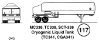
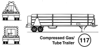

ROAD TRAILER IDENTIFICATION CHART*
 CAUTION: This chart depicts only the most general shapes of road trailers. Emergency response personnel must be aware that there are many variations of road trailers, not illustrated above, that are used for shipping chemical products. The suggested guides are for the most hazardous products that may be transported in these trailer types.
* The recommended guides should be considered as last resort if the material cannot be identified by any other means.